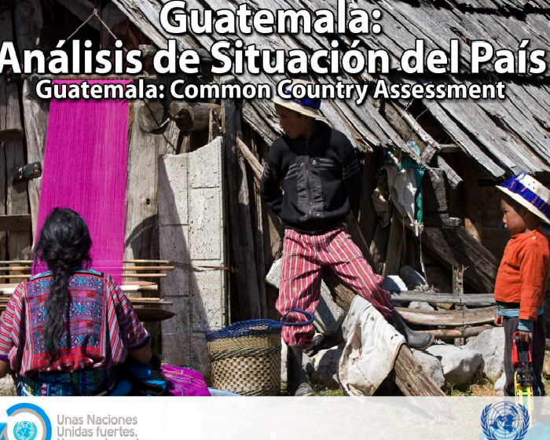

OBJETIVOS DE DESARROLLO SOSTENIBLE
Programa de las Naciones Unidas para el Desarrollo
2019
GUATEMALA: cerrando brechas para un generar un crecimiento mas inclusivo
Susana M.Sanchez, J Humberto Lopez, Kinnon Scott
2019
METAS DE LOS OBJETIVOS DE DESARROLLO SOSTENIBLE
GOBIERNO DE ESPAÑA
2019
LA VIVIENDA PRODUCTIVA COMO UN MECANISMO IDÓNEO PARA ROMPER CON LA POBREZA Y EXTREMA POBREZA EN GUATEMALA
Sandra G.Leytán
2006
Programas sociales, superación de la pobreza e inclusión laboral
Laís Abramo, Simone Cecchini, Beatriz Morales
2019

LA CONSTRUCCION DEL CONCEPTO DE SALUD
Irma Arriagada, Veronica Aranda, Francisca Miranda
2005
POLITICAS Y PROGRAMAS DE SALUD EN AMERICA LATINA: problemas y respuestas
Laís Abramo, Simone Cecchini, Beatriz Morales
2019
EL SISTEMA EDUCATIVO EN GUATEMALA
Maria Aceña, Walter Menchú
2019
EQUIDAD DE GENERO: Experiencias e investigaciones
Dina Valdez, Rodolfo Valenzuela, Hilda Rodríguez, Blanca Ochoa, María Moreno
2014
IGUALDAD DE GÉNERO Y NO DISCRIMINACIÓN EN LA GESTIÓN DEL EMPLEO
Organización Internacional del Trabajo
2014
SERVICIOS DE AGUA POTABLE Y SANEAMIENTO EN GUATEMALA: Beneficios potenciales y determinantes de exito
Emilio Lentini
2010
AGUA LIMPIA Y SANEAMIENTO
Programa de las Naciones Unidas para el Desarrollo
2019
ELA ENERGÍA RENOVABLE EN GUATEMALA: Presente y futuro
Nelson Amaro
2014
PERFIL ENERGÉTICO DE GUATEMALA
INCYT, VRIP; Universidad Rafael Landivar
2018
PERSPECTIVAS SOCIALES Y DEL EMPLEO EN EL MUNDO
2019
GLOBALIZACIÓN Y DESEMPLEO. REFLEXIONES EMPÍRICAS DESDE LA PERSPECTIVA DE LA TEORÍA DEL "SISTEMA MUNDIAL
Tausch, Arno
2010
ENCUESTA NACIONAL DE EMPLEOS E INGRESOS
Instituto Nacional de Estadistica
2019
El Entorno de la Industria 4.0: Implicaciones y Perspectivas Futuras
Ynzunza Cortés, Carmen Berenice; Izar Landeta, Juan Manuel; Bocarando Chacón, Jacqueline Guadalupe; Aguilar Pereyra, Felipe; Larios Osorio, Martín
2017
SISTEMAS DE INNOVACION EN CENTROAMERICA
Naciones Unidas
2013
Importancia del sector industrial en el desarrollo económico: Una revisión al estado del arte
Medardo Palomino
2017
ODS 10: Reducir la desigualdad en los países y entre ellos en América Latina y el Caribe
Programa de las Naciones Unidas Para el Desarrollo
2020
REVISTA ANDINA DE ESTUDIOS POLITICOS
Judith Jaschick
2013
CONSULTA DE CIUDADES SOSTENIBLES
Programa de las Naciones unidas Para el Desarrollo
2020
SINGAPUR: politica y comercial y politica de desarrollo. Contraste de teorias.
Andrés Carrión Jara, Viviana Sáez Ruiz
2019
LAS CIUDADES COMO OBJETIVOS DE DESARROLLO SOSTENIBLE
(IEEE)
2017
COMUNICADO DE PRENSA IPCC
IPCC
2021
ANTECEDENTES Y CONTEXTO DEL CAMBIO CLIMÁTICO EN GUATEMALA
Gabriela Alfaro Marroquín, Rosario Gómez
2019
OCÉANOS Y ECOSISTEMAS MARINO-COSTEROS
Silja Ramírez, José Roberto
2019
CENTRO DE PROTECCIÓN DE FAUNA EN PELIGRO DE EXTINCIÓN, REGIÓN ORIENTE
Maria José Valdez
2013
EL ESTADO DE LOS BOSQUES DEL MUNDO
ONU programa para el medio ambiente
2020
LA CONTAMINACION DEL SUELO: una realidad oculta
Natalia Rodríguez Eugenio, Michael McLaughlin, Daniel Pennock
2019
La PAZ COMIENZA POR UNO MISMO
Bouché Peris, J. Henri
2003
PAZ SOCIAL Y CULTURA DE PAZ
Virginia Arango
2007
ALIANZAS PARA EL DESARROLLO DE INFRAESTRUCTURA ECONÓMICA
INADIE
2018
DIAGNÓSTICO DEL FUNCIONAMIENTO DE LA DIRECCIÒN DE COMUNICACIÓN DEL MINISTERIO DE RELACIONES EXTERIORES
LESBIA MAGALY BOLVITO ARDÓN DE POLO
2015
![]()